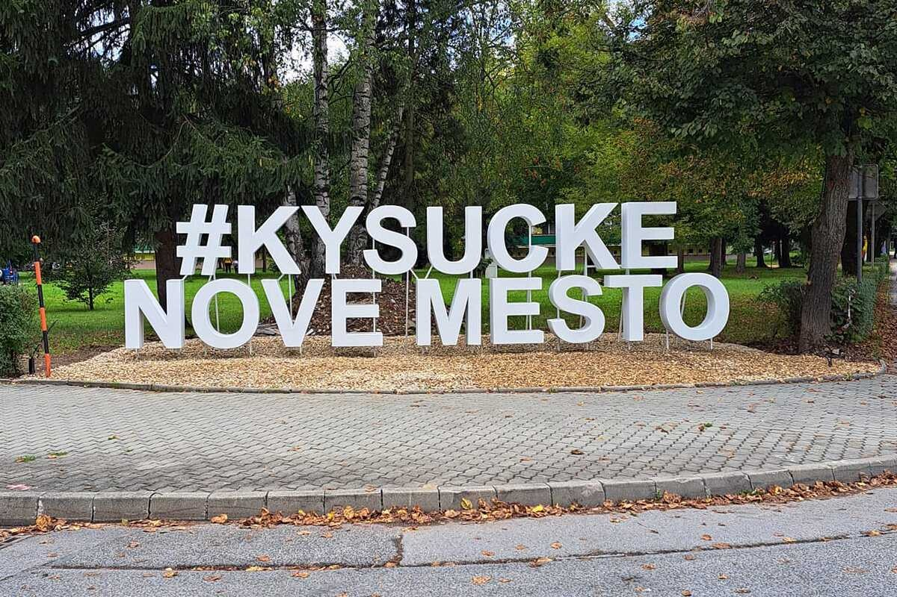
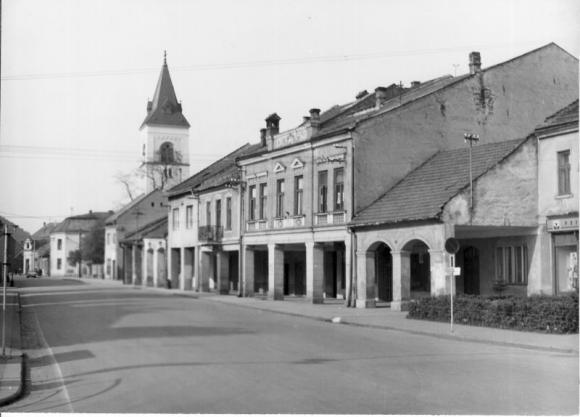
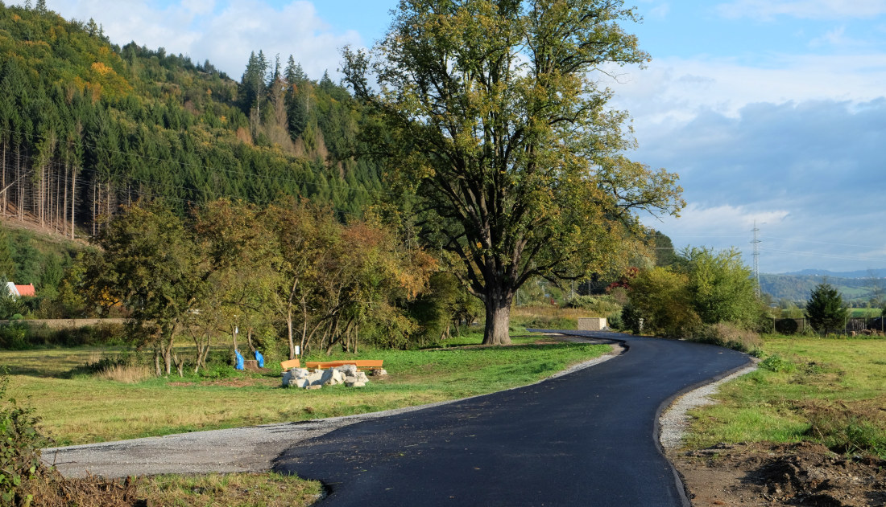
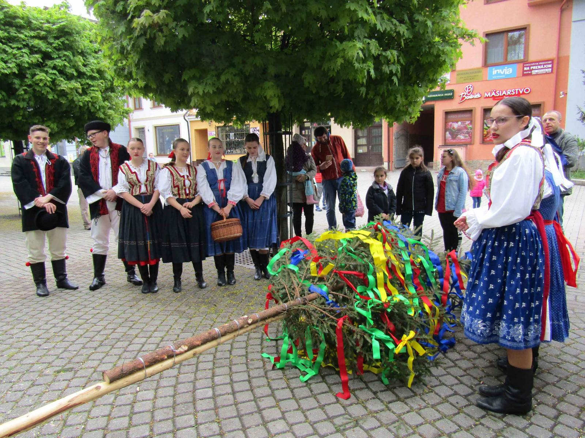

O meste
Úvod
Kysucké Nové Mesto je malebné mesto nachádzajúce sa v srdci Kysúc, na severe Slovenska. Mesto leží na rieke Kysuca a je obklopené nádhernou prírodou, ktorú tvoria hory, lesy a údolné oblasti, čo poskytuje vhodné podmienky pre turistiku, cyklistiku a relaxáciu.
História
Mesto má bohatú históriu, ktorá sa datuje až do 13. storočia, kedy sa tu usadili prví obyvatelia. Kysucké Nové Mesto sa postupne rozvíjalo a stalo sa dôležitým centrom obchodu a remesiel. Medzi významné historické pamiatky patrí kostol sv. Mikuláša, ktorý je skvostom gotickej architektúry.
Kultúra
Kysucké Nové Mesto je známe aj svojim kultúrnym dedičstvom. Mesto hostí množstvo podujatí, festivalov a výstav, ktoré oslavujú tradičné remeslá, folklór a miestnu kultúru. Medzi najvýznamnejšie podujatia patrí Kysucký jarmok, ktorý sa každoročne koná a priťahuje návštevníkov z celého regiónu.

Príroda
V okolí mesta sa nachádzajú aj obľúbené turistické trasy, ktoré vedú do nádherných prírodných oblastí, ako sú Kysucká vrchovina a Malá Fatra. Mesto ponúka množstvo možností na aktívny odpočinok, ako aj relaxáciu v krásnom prostredí prírody.
Mesto
Kysucké Nové Mesto sa môže pochváliť aj rozvinutou infraštruktúrou, ktorá zabezpečuje komfort pre obyvateľov aj návštevníkov. Mesto disponuje modernými službami, ako sú školy, zdravotnícke zariadenia, športové areály a nákupné centrá. Rôznorodé voľnočasové aktivity sú pre miestnych obyvateľov bežné, pričom mesto podporuje šport a kultúru prostredníctvom rôznych organizácií a podujatí.

Tradície
Miestne tradície a zvyky sú zachovávané prostredníctvom folklórnych súborov a remeselných trhov, kde sa môžete stretnúť s tradičnými remeslami ako je tkáčstvo, keramika a výroba nábytku. Kysucké Nové Mesto sa pyšní aj svojím folklórom, ktorý je bohatý na piesne, tance a zvyky, čo robí z mesta kultúrne centrum regiónu.
Aktivity v prírode
Okolie Kysuckého Nového Mesta je pre milovníkov prírody skutočným rajom. Návštevníci môžu objavovať prekrásne horské scenérie, ako aj množstvo turistických trás, ktoré sú prístupné pre rôzne úrovne fyzickej zdatnosti. V zime sa región mení na obľúbené miesto pre lyžiarov, ktorí môžu využiť blízke lyžiarske strediská.
Modernosť
V posledných rokoch sa Kysucké Nové Mesto snaží o rozvoj a modernizáciu, pričom si zároveň zachováva svoju kultúrnu a historickú hodnotu. Mesto investuje do obnovy verejných priestranstiev, zlepšovania dopravnej infraštruktúry a zvyšovania kvality života obyvateľov. Nové projekty a iniciatívy, ako sú ekologické programy a podpora miestnych podnikateľov, prispievajú k udržateľnému rozvoju mesta.